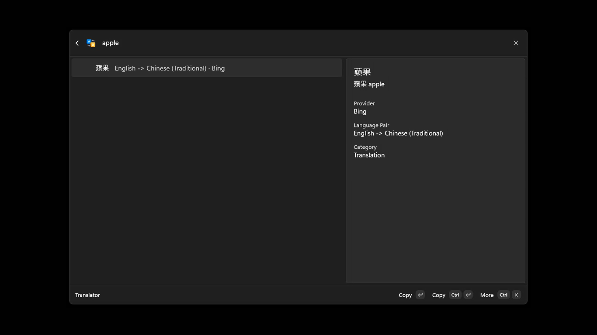
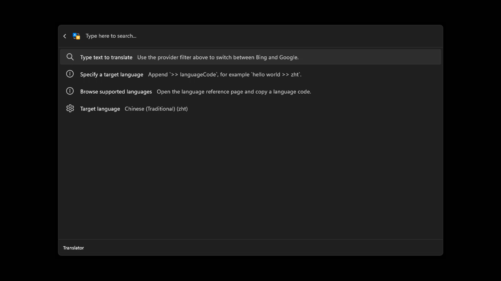
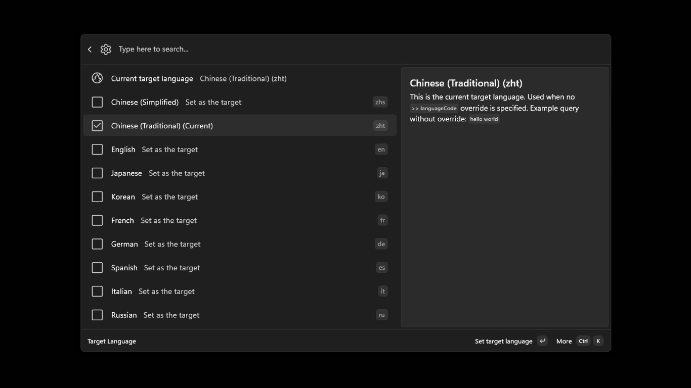
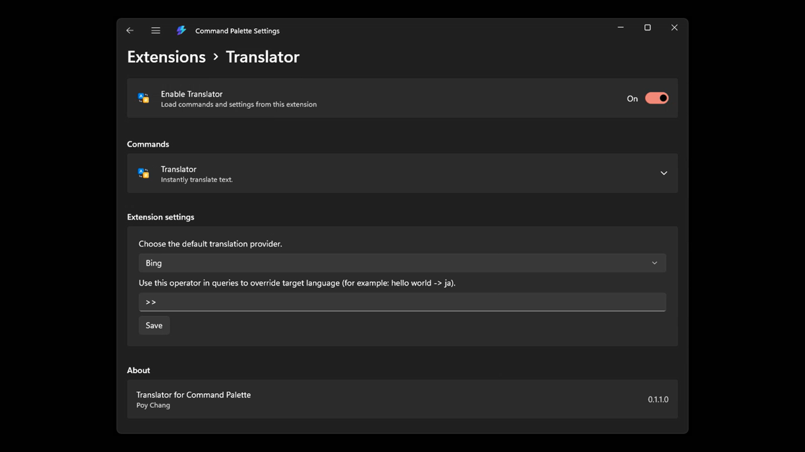

A native Command Palette flow
Search for and run Translator without opening another browser window. Input, results, and actions stay together.
WINDOWS COMMAND PALETTE EXTENSION
Translator for Command Palette brings text translation into Windows Command Palette. Open Translator, enter your text, and get the result without leaving your work.
For Windows 11 · MIT License · Published by Poy Chang

WHY IT FITS
Search for and run Translator without opening another browser window. Input, results, and actions stay together.
Use the default >> syntax to override the target for one translation, or save a preferred language.
Copy a translation directly, copy the source text, or open the matching provider website from more actions.
QUICK START
This is a fixed interaction example and does not call a live translation API. Actual results depend on your provider and network.
Search for and run Translator in Windows Command Palette.
Type something such as hello world. Without a target, the configured language is used.
Enter hello world >> ja for Japanese, then use Copy on the result to take it with you.
SEE IT IN CONTEXT
These are actual product screens from the repository.



READY WHEN YOU ARE
For everyday use, you need Windows 11, an internet connection, and the Microsoft Store installation. Developers can use .NET 10 and Windows build tools as documented in the project.
Open Microsoft StoreGOOD TO KNOW
Yes. Translation requests are sent to the selected third-party provider over the internet, using the app's internetClient capability.
The app currently includes Bing, Google, and Aliyun providers. Bing is the default and can be changed in Preferred provider settings.
Yes. Open Target language from the translation page and choose a language. The built-in catalog includes English, Traditional Chinese, Simplified Chinese, Japanese, Korean, French, German, and more.
According to the privacy policy, the app and developer do not retain input or translation results. Text and language codes are sent directly to the third-party service you choose.